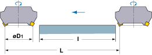

Cutting Time Calculator
Rev: 001

\[ Tc = \frac{L}{vf} \, (min) \]
Tc : Cutting Time (min)
L : Cutting Length (mm)
vf : Feed Rate (mm/min)
Calculate L
mm
Calculate vf
mm/min
Calculate Tc
min
Calculate
* This calculator is for reference only. Actual results may vary based on cutting conditions.